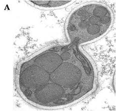

MICROBE OF THE MONTH

Hansenula polymorpha
Hansenula polymorpha occurs naturally in spoiled orange juice,maize meal, the gut of various insects and
soil. Hansenula polymorpha(also designated as P. angusta, Ogataea angusta) is the widest known member of
the Hansenula genus. Hansenula polymorpha is an important yeast species in industrial biotechnology and
has become a powerful production platform for heterologous protein biosynthesis.
Hansenula polymorpha is thermotolerant and capable of growing at temperatures ranging from 30 to 50o C. Hansenula polymorpha is a methylotrophic yeast, it can utilise methanol as its sole carbon and energy source.The H. polymorpha RB11 genome consists of approximately 9.5 Mb and is organised as six chromosomes ranging in size from 0.9 to 2.2 Mb.
Genetics
Hansenula polymorpha is thermotolerant and capable of growing at temperatures ranging from 30 to 50o C. Hansenula polymorpha is a methylotrophic yeast, it can utilise methanol as its sole carbon and energy source.The H. polymorpha RB11 genome consists of approximately 9.5 Mb and is organised as six chromosomes ranging in size from 0.9 to 2.2 Mb.
industrial Applications
- Production of heterologous proteins One of the most significant applications of H. polymorpha is its use as a host for the production of heterologous proteins.One of the most notable successes is the production of hepatitis B surface antigen (HBsAg), which is used in vaccines. This vaccine contains the small surface antigen of HBV (subtype adr) that is synthesised and purified from genetically engineered H. polymorpha yeast cells. Each 1 ml of the vaccine contains 1 mg of purified hepatitis B
- Biofuel Production Bioethanol is the term used for ethanol produced from biomass for biofuel applications. Its combustion efficiency is 15% higher than that of gasoline due to the presence of 34.7% oxygen. Research studies on H. polymorpha strains have demonstrated its ability to ferment lignocellulose sugars at high temperatures for ethanol production. The capability of thermotolerant H. polymorpha yeast to produce ethanol from the glucose, fructose, and xylose could be used for the high temperature (40–45 °C) fermentation of lignocellulosic hydrolysates (rich in aforementioned sugar) for ethanol production. The high-temperature fermentation using H. polymorpha yeast could also be beneficial from a technical and environmental point of view. This type of fermentation reduces the risk of contamination by other microorganisms that cannot survive at elevated temperatures, which ultimately improves the process’ efficiency.
- Recombinant Protein Production The first heterologous protein produced in H. polymorpha was the surface antigens from hepatitis B virus. Furthermore, H. polymorpha, has been extensively used for the production of Virus-like particle (VLP), which are viral proteins that can be used for the development of vaccines.Further examples of recombinant proteins using H. polymorpha as host include the human Parathyroid Hormone (PTH) and Staphylokinase (SAK).
conclusion
Hansenula polymorpha has established itself as a versatile organism in industrial biotechnology. Its ability to utilise methanol, tolerate extreme environmental conditions, and produce important products like heterologous proteins make it an attractive host for various applications.